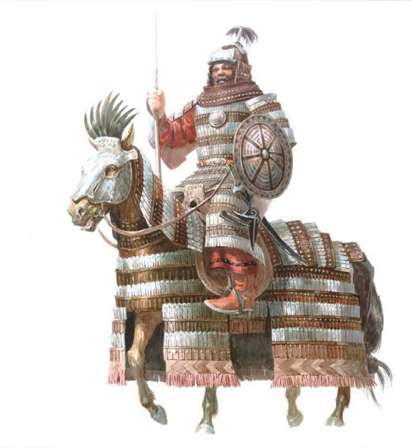
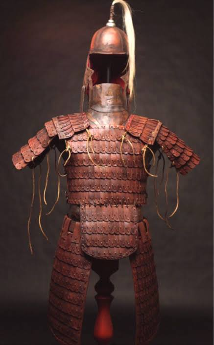
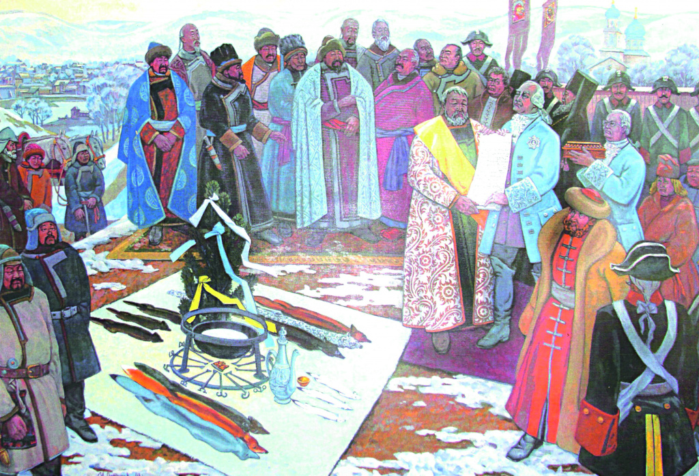
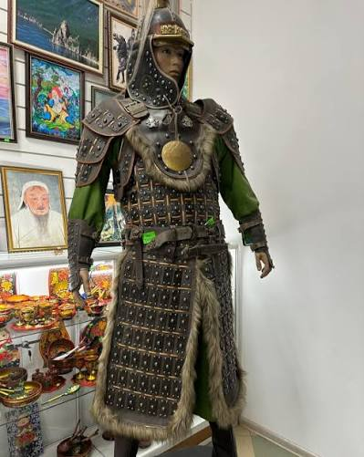
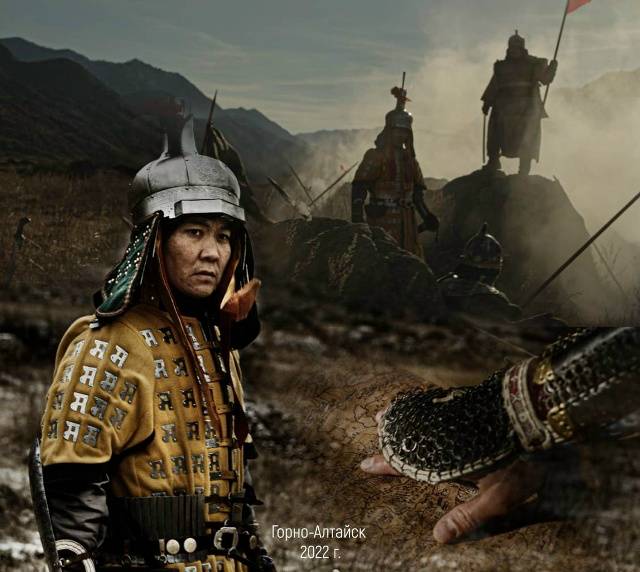
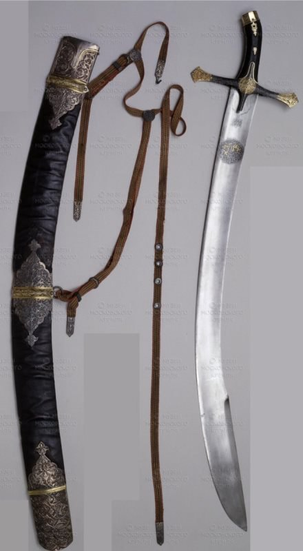
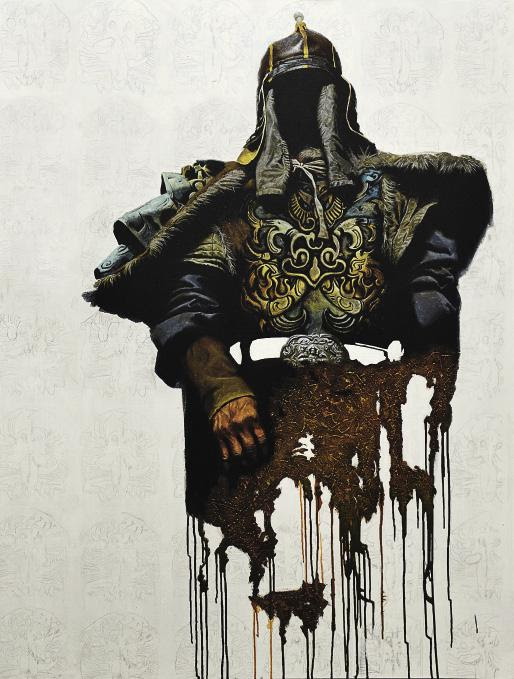

Образование единого государства
Период:
Ключевые события: Курултай 1206 года, объединение кочевых племен, начало экспансии в Центральную Азию.
Группа: 932420
Вариант: 19
Тема: Материальная культура Теленгитского улуса (Телеутского княжества) XVII–XVIII веков. Научный базис исследований опирается на графические и текстовые реконструкции доктора исторических наук Л. П. Боброва.

Период:
Ключевые события: Курултай 1206 года, объединение кочевых племен, начало экспансии в Центральную Азию.

Период:
Ключевые события: Консолидация западных монголов, противостояние с династией Мин, создание мощной кочевой империи.

Период:
Ключевые события: Обособление «Теленгитского улуса», торговая дипломатия с Русским царством и Джунгарией.

Век:

Век:

Век:

Век: